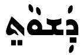
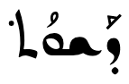
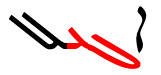
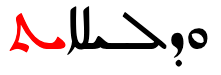
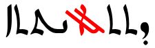
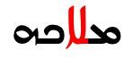
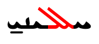
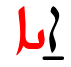
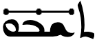

This page gathers together basic information about the Syriac script and its use for the Classical, Eastern and Western Syriac dialects of the Syriac language. It aims (generally) to provide an introduction to the orthography and typographic features, and (specifically) to advise how to write Syriac using Unicode.
Links on Unicode character names and links on code point values in character lists lead to character notes documents that list information character-by-character. This information is often more detailed than that on this page.
Footnote links with an arrow alongside take you to more detailed information on the current topic.
Clicking on Syriac examples shows a list of the characters in that example.
Click on the vertical blue bar (bottom right) to change font settings for the sample text.
Colours and annotations on panels listing characters are relevant to their use for the Syriac language.
Unless in parentheses, the transcriptions in italics that follow Syriac text are a transliteration developed for these pages. Those in parentheses follow one or more commonly used transcription methods. Transcriptions in ⌈ brackets ⌋ are either phonemic or phonetic.
Samples
Select part of this sample text to show a list of underlying characters.
The Syriac alphabet is a writing system primarily used to write the Syriac language from the 1st century AD. It is one of the Semitic abjads descending from the Aramaic alphabet through the Palmyrene alphabet, and it shares similarities with the Phoenician, Hebrew, Arabic and the traditional Mongolian scripts.
Apart from Classical Syriac Aramaic, the alphabet has been used to write other dialects and languages. Several Christian Neo-Aramaic languages from Turoyo to the Northeastern Neo-Aramaic dialects of Assyrian and Chaldean, once vernaculars, primarily began to be written in the 19th century. The Serṭā variant specifically has recently been adapted to write Western Neo-Aramaic, traditionally written in a square Aramaic script closely related to the Hebrew alphabet. Besides Aramaic, when Arabic began to be the dominant spoken language in the Fertile Crescent after the Islamic conquest, texts were often written in Arabic using the Syriac script as knowledge of the Arabic alphabet was not yet widespread; such writings are usually called Karshuni or Garshuni (ܓܪܫܘܢܝ). In addition to Semitic languages, Sogdian was also written with Syriac script, as well as Malayalam, which form was called Suriyani Malayalam.
Syriac is an abjad. The script relies mostly on consonant sounds to write words, although in Modern Aramaic written in Syriac vowel sounds tend to be written using diacritics, making it more like an alphabetic script. See the table to the right for a brief overview of features, taken from the Script Comparison Table.
Syriac is used for a number of languages. The Syriac language itself has two dialects, which are very similar, with almost no differences in grammar or vocabulary, but there are differences in pronunciation.
The script itself, however, has three main writing systems: maḏnḥāyā (ܡܲܕ݂ܢܚܵܝܵܐ) (eastern), ʾesṭrangēlā (ܐܣܛܪܢܓܠܐ), and serṭā (ܣܶܪܛܳܐ) (western).
All ancient manuscripts used Estrangelo. West and East Syriac text uses it for headers, titles, and subtitles. It's also the current standard for Western scholarship.n6
Serto is used in West Syriac texts, Turoyo, and Garshuni (Arabic written with Syriac).
Madnhaya is used for East Syriac and Swadaya (Aramaic) texts, and in West Syriac texts for headers, titles and subtitles.n6
Garshuni texts are Arabic written in the Syriac script. It is currently used for writing Arabic liturgical texts amongst the Syriac-speaking Christians. A large corpus of manuscripts ranging from the 8th century till the modern day exists in Garshuni. Garshuni employs two additional letters and the Arabic set of vowels and combining marks.n6
Syriac has also been used to write Persian, Sogdian, Ottoman Turkish, and Malayalam.
Words in Syriac are separated by spaces.
Note on transliteration: The transliterated text here conforms mostly to that of the sources used, but takes a departure for the vowels in order to ensure a one-to-one correspondence between Syriac and Latin characters.
Text direction
Syriac script is written horizontally, right-to-left. Like other RTL scripts, such as Arabic and Hebrew, modern numbers and text in LTR scripts are displayed left-to-right (producing 'bidirectional' text).
Bidirectional Syriac text. Numbers are read left-to-right, and the rest of the text flows right-to-left.
The Unicode Bidirectional Algorithm automatically takes care of the ordering for all the text in fig_bidi_text, as long as the 'base direction' is set to RTL. In HTML this can be set using the dir attribute, or in plain text using formatting controls.
If the base direction is not set appropriately, the directional runs will be ordered incorrectly as in fig_bidi_no_base_direction.
ܐܝ ܦܝ (IP) ܕܝܠܟ ܢܬܟܬܒ ܒܬܫܥܝܬܐ ܕܦܐܬܐ.
ܐܝ ܦܝ (IP) ܕܝܠܟ ܢܬܟܬܒ ܒܬܫܥܝܬܐ ܕܦܐܬܐ.
The exact same sequence of characters with the base direction set to RTL (top), and with no base direction set on this LTR page (bottom).
All vowels are rendered in Syriac using combining characters. There are two sets of these. Maḏnḥāyā uses a series of dots. Serṭā uses a set of miniaturised Greek characters, but also uses the dots. ʾEsṭrangēlā doesn't normally show vowels.
Modern Aramaic written in Syriac is usually fully pointed.
Vowel sounds
Click on the sounds to reveal locations in this document where they are mentioned.
Plain vowels.
Source wa. Phones in a lighter colour are non-native or allophones.
There are several dialects, each of which have slight phonetic differences. For more detail, see Wikipedia.
The following table summarises how standard vowel sounds can be written, using ܒ as a base.
i
ܒܝܼ
ɪ
ܒܸ
u
ܒܘܼ
e
ܒܹܒܹܝܒܸܝ
ɛ
ܒܸ
o
ܒܘܿ
a
ܒܲ
ɑ
ܒܵ
aj
ܒܲܝ
aw
ܒܲܘ
You can see that the sounds i and u are always written using a mater lectionis (with or without pointing).
Greek letter notation
In the Western style there are 5 Greek symbols, but each can appear either above or below the base character, and one code point is provided for each position. The complete set is as follows:
ܺ␣ܻ␣ܽ␣ܾ␣ܶ␣ܷ␣ّ␣ܰ␣ܱ␣ܳ␣ܴ
The serto style of the script also uses a lowercase omega on one word, the interjection 'Oh!', ie. ܐܘّʾō. The omega is represented using ّ[U+0651 ARABIC SHADDA].
The following table shows how standard vowel sounds can be written, using ܒ as a base.
i
ܒܺ|ܒܻ
ɪ
u
ܒܽ|ܒܾ
e
ܒܶ|ܒܷ
ɛ
ܒܶ|ܒܷ
o
ܒܳ|ܒܴ
a
ܒܰ|ܒܱ
ɑ
Consonants
Consonant sounds
Click on the sounds to reveal locations in this document where they are mentioned.
labial
dental
alveolar
post-
alveolar
palatal
velar
uvular
pharyngeal
glottal
stop
pb pˤ pʰ
td tˤ tʰ
cɟ cˤ cʰ
kɡ kˤ kʰ
q
ʔ
affricate
t͡ʃd͡ʒ t͡ʃˤ t͡ʃʰ
fricative
fv
θð
sz sˤ
ʃʒ
xɣ
ħʕ
h
nasal
m
n
ŋ
approximant
ʋw
llˤ
j
trill/flap
rɾrˤ
Source wa. Phones in a lighter colour are non-native or allophones.
Among most Assyrian Neo-Aramaic speakers, the pharyngeal ʕ is pronounced as ʔ or ∅, or geminates a previous consonant.
Show notes on dialectal variations, taken directly from Wikipedia:
In Iraqi Koine Assyrian and many Urmian & Northern dialects, the palatals c, ɟ and aspirate cʰ are considered the predominate realisation of k, g and aspirate kʰ.
The phoneme ħ is only used by Assyrian-speakers under larger Arabic influence. In most dialects, it is realised as x. The one exception to this is the dialect of Hértevin, which merged the two historical phonemes into ħ, thus lacking x instead.
The pharyngeal ʕ, represented by the letter `e, is a marginal phoneme that is generally upheld in formal or religious speech. Among the majority of Assyrian speakers, `e would be realised as aɪ̯, eɪ̯, ɛ, j, deleted, or even geminating the previous consonant, depending on the dialect and phonological context.
f is a phoneme heard in the Tyari, Barwari and Chaldean dialects. In most of the other Assyrian varieties, it merges with p. though f is found in loanwords for these varieties of Assyrian.
The phonemes t and d have allophonic realisations of θ and ð (respectively) in most Lower Tyari, Barwari and Chaldean dialects, which is a carryover of begadkefat from the Ancient Aramaic period.
In the Upper Tyari dialects, θ is realised as ʃ or t; in the Marga dialect, the t may at times be replaced with s.
In the Urmian dialect, w has a widespread allophone ʋ (it may vacillate to v for some speakers).
In the Jilu dialect, q is uttered as a tense k. This can also occur in other dialects.
ɡ is affricated, thus pronounced as d͡ʒ in some Urmian, Tyari and Nochiya dialects. k would be affricated to t͡ʃ in the same process.
ɣ is a marginal phoneme that occurs across all dialects. Either a result of the historic splitting of g, through loanwords, or by contact of x with a voiced consonant.
ʒ is found predominately from loanwords, but, in some dialects, also from the voicing of ʃ (e.g. (ḥašbunā)xaʒbu:na:, counting, from the root ḥ-š-b, to count) as in the Jilu dialect or the fortition of j (e.g. Urmiynāyā > UrmižnāyāUɾ:mɪ:ʒna:ja:, Urmian from mijawater)
n can be pronounced ŋ before velar consonants x and q and as m before labial consonants.
Basic consonants
All the letters in the Syriac block are consonants. There are 22 basic consonants.
Isolated versions of 3 letters, such as may be found in counter styles, are usually presented as a doubled letter, using intial and final forms, ie. ܟܟ, ܡܡ, and ܢܢ.
The glyphs used to represent consonants in Estrangelo, Eastern, and Western Syriac can be significantly different. The following list compares them, top to bottom, in that order.
ܦܦܦppp, p̄
ܒܒܒbbb ḇ
ܬܬܬttt ṯ
ܕܕܕddd ḏ
ܛܛܛtˤtˤṭ
ܟܟܟkkk ḵ č
ܓܓܓɡgg ḡ ǧ
ܩܩܩqqq
ܐܐܐʔʾʾ ȃ
ܣܣܣsss
ܙܙܙzzz ž
ܨܨܨsˤsˤṣ
ܫܫܫʃʃš ẑ
ܚܚܚħħḥ
ܥܥܥʕʿʿ
ܗܗܗhhh
ܡܡܡmmm
ܢܢܢnnn
ܘܘܘwww û ô
ܪܪܪrrr
ܠܠܠlll
ܝܝܝjyy î
ܖܖܖdḋd ḏ
ܞܞܞjʰjʰjh
ܤܤܤ-sṡs
ܧܧܧpṗp
ܖ
ܖ [U+0716 SYRIAC LETTER DOTLESS DALATH RISH] is an alternative shape that can be used to represent an ambiguous form in ancient texts that could stand for either ܕd or ܪr.
Hard and soft sounds
The following consonant symbols represent two sounds, one 'hard' and one 'soft'. The hard sound is an unaspirated plosive, the soft sound is an aspirated fricative or w.
ܦ␣ܒ␣ܬ␣ܕ␣ܟ␣ܓ
The intended sound of the letter can be made explicit using diacritics: high ݁[U+0741 SYRIAC QUSHSHAYA] for the hard form, eg. ܦ݁ܐp݁ʾ (pē), and low ݂[U+0742 SYRIAC RUKKAKHA] for the soft form, eg. ܐܠܦ݂ʾlp̄ (ʾālap̄).
In the maḏnḥāyā style, which uses dots for vowels, soft form marks are usually omitted if they would interfere with the vowel marks. For native words, softening depends on the letter's position within a word or syllable, location relative to other consonants and vowels, gemination, etymology, and other factors. Foreign words do not always follow the rules for softening.w
Consonant clusters
There is no equivalent to the Arabic sukun to indicate clusters of consonant sounds. (Although the Arabic character can be used when transliterating Arabic text in Syriac script.)
However, the short a and ɪ vowels are only used in closed syllables, so if they are followed by an intervocalic consonant, it indicates that the consonant is doubled, eg. ܣܲܡܵܐsămaʾsammapoison vs. ܣܵܡܵܐsamaʾsaːmaportion.d
Baseline elongation
ـ
Syriac uses the Arabic character ـ [U+0640 ARABIC TATWEEL] to lengthen the baseline.
Repertoire extensions
Maǧlīyānā
A mark called ܡܓ̰ܠܝܢܐmaǧlīyānā is combined with a base consonant to represent non-classical sounds in modern dialects or change the sound for foreign words. It is applied to 4 consonants in Assyrian Neo-Aramaic, and 2 in Turoyo.
Garshuni (ܓܪܫܘܢܝ) refers to the practise of writing Arabic in the syriac script. In addition to Arabic script diacritics, a couple of Syriac letter forms are used.
ܔ␣ܜ␣ً␣ٌ␣ٍ␣َ␣ُ␣ِ␣ّ␣ْ␣ٰ␣ٕ␣ٔ␣ٓ␣̈
To represent teh marbuta, Syriac uses ̈[U+0308 COMBINING DIAERESIS]. Vowel sounds are written using the Arabic harakat marks.
Additional consonants
Several additional consonants are used for writing other languages in Syriac: 3 for Persian
Syriac uses a large number of diacritics, encoded both in the Syriac block and the Combining Diacritical Marks block (plus the Arabic block for Garshuni text). For the 17 vowel-related diacritics, see vowels. The rest of this section lists additional diacritics used.
̄[U+0304 COMBINING MACRON] and ̱ [U+0331 COMBINING MACRON BELOW] are used for various purposes, ranging from phonological to grammatical and orthographic markers.d Nelson et al. describe the following uses for the lower line: "the sublinear line can be used to: 1) indicate that the letter under which it lies is not to be pronounced, 2) disambiguate between the passive imperative verb from the passive past since they are homographs, and 3) to indicate that the letter under which it lies is to be pronounced with a shewa".n8
The remaining diacritics in the above list are used in unpointed as well as pointed text, and are described in the following sections: talqana, syame, ddots, and feminine.
Diacritics for Assyrian/Turoyo
̃␣̰␣ܑ
The combining tildes are used in modern East Syriac styles to modify the sound of a consonant, eg. to represent sounds not found in non-classical Syriac. See magliyana.
The superscript alaph indicates etymological information (see talqana), but is only used in the East Syriac style.
݇[U+0747 SYRIAC OBLIQUE LINE ABOVE] is used in the Eastern style to indicate letters that are not pronounced. It is frequently used in the modern Aramaic koine to bridge difference in dialects. For example, ܒܬ݇ܪbt݇rafter, is pronounced baθar in some modern dialects, harking back to the classical pronunciation, but bar in Urmi and the koine.
The letters ܐ ܥ ܗ ܝ, when included for etymological reasons, are often silent, though without using the talqana.n
ܑ [U+0711 SYRIAC LETTER SUPERSCRIPT ALAPH] is used in East Syriac texts to indicate an etymological alaph, eg. ܩܲܖ݄ܡܵܝܑܼܬ̣qaḋ‒݄māyˈit‒̜. It maps to nothing in West Syriac.
Syame (plurals)
̈[U+0308 COMBINING DIAERESIS] is used to represent the Syriac syame (ܣܝ̈ܡܐ), which indicates plural nouns, adjectives and participles. It is needed because many plural words would otherwise look the same as the singular word, eg. ܡܠܟܐmlkʾ(malkā)king could otherwise be also read as malkēkings. Instead, the plural form can be written as ܡܠܟ̈ܐmlk̋ʾ.
Although it's not strictly needed for non-regular words, it is also used for them, eg. ܒܝܬܐbytʾ(baytā)house and ܒ̈ܬܐb̋tʾ(bāttē)houses.
Some modern usage, however, omits this diacritic when vowel marks are present, because it is redundant.
An author can place this mark above any letter in a word, but if the word contains one or more of ܪ[U+072A SYRIAC LETTER RISH] the mark is generally placed over the one which is nearest the word end, and replaces the single dot above it, eg. ܢܘܟ݂ܪ̈ܝܐnwk‒̣r‒̈yʾnuxrajɪmodern.
Other likely locations include low rising letters, and letters near the middle or end of a word.w
The dot is also written over the 3rd person fem. suffix ܘܗ̇-wḣ-o, the masc. and fem. personal pronouns, ܗ̇ܘḣwaw and ܗ̇ܝḣyaj, and their corresponding demonstratives.
Feminine marker
݀ [U+0740 SYRIAC FEMININE DOT] is a feminine marker used with ܬ[U+072C SYRIAC LETTER TAW] to indicate a feminine suffix. East Syriac fonts should render as two dots below the base letter, whereas West Syriac fonts render as a single dot to the left of the base, eg. ܕܲܫܘܵܬ݀daʃwātʺ (Eastern) vs. ܕܰܫܘܳܬ݀dȧʃwåtʺ (Western).


The same word in Eastern (left) and Western (right) script styles, showing the different appearance of the feminine marker in each (after or below the last character.)
Punctuation
Modern literary Syriac, Garshuni, Assyrian and Turoyo use basic punctuation from the ASCII and Arabic ranges, as described in boundaries. These are the basic items.
،␣؛␣.␣؟
The Syriac block includes a range of punctuation, which are not much used in modern, non-liturgical contexts, whose usage ranges from punctuating texts to guiding the reading of biblical texts in terms of accents, tone, etc.n44
܀␣܁␣܂␣܃␣܄␣܅␣܆␣܇␣܈␣܉
Example of estrangelo script as used by Western scholarsn, which includes some additional punctuation.
Other punctuation marks are used to indicate abbreviations, and footnotes or sidenotes, and are described further in the boundaries and digits sections. They are also mostly liturgical or archaic in nature.
More recently, the Unicode Standard added a set of characters which do the same thing but also isolate the content from surrounding characters, in order to avoid spillover effects. They are RLI [U+2067 RIGHT-TO-LEFT ISOLATE], LRI [U+2066 LEFT-TO-RIGHT ISOLATE], and PDI [U+2069 POP DIRECTIONAL ISOLATE]. The Unicode Standard recommends that these be used instead, however some applications don't yet recognise them.
There is also FSI [U+2068 FIRST STRONG ISOLATE], used initially to set the base direction according to the first recognised strongly-directional character.
ALM [U+061C ARABIC LETTER MARK] is used to produce correct sequencing of numeric data. Follow the link for details.
ZWJ [U+200D ZERO WIDTH JOINER] and ZWNJ [U+200C ZERO WIDTH NON-JOINER] are used to control the joining behaviour of cursive glyphs. They are particularly useful in educational contexts, but also have real world applications.
ZWJ permits a letter to form a cursive connection without a visible neighbour.
ZWNJ prevents two adjacent letters forming a cursive connection with each other when rendered.
Numbers
Modern Syriac uses Western digits, like Hebrew.n11
There is also, however, a letter-based number system. Wikipedia hints at the use of diacritics to create higher numbers (using various systems of dashes above or below, [bet] can stand for 2,000 and 20,000w).
Nelson et al. go further with the following: "When letters are used to designate numbers, a circumflex under the letter Alaph represents the numerical value 10,000,000 according to Oddo (1897), but 100,000 according to Costaz (1955); Payne Smith’s monumental lexicon assigns the value 10,000,000 to an Alaph with two dots under it!".n8
U+070F SYRIAC ABBREVIATION MARK (SAM) is used to indicate letter-based numbers. Note how, in this example, the prefix ܒ, is not covered by the SAM, only the number itself.
A prefixed number, with Syriac abbreviation mark only over the number part.
A sequence of European numbers, for example a range separated by hyphens, runs from right to left in the Syriac script (and Arabic or Thaana scripts), whereas for Persian, Hebrew, N’Ko or Adlam scripts it runs left to right.
fig_range shows some Syriac text, which is right-to-left overall, containing a numeric range that is ordered RTL, ie. it starts with 240 and ends with 250.
ܛܪܦܐ 240-250 ܩܘܼܛܢ
A numeric range in Syriac language text.
The Unicode Bidirectional Algorithm automatically produces the expected ordering when a sequence or expression follows Syriac characters. However, a sequence that appears alone on a line doesn't benefit from this, so to make the text appear correctly for Syriac you should add U+061C ARABIC LETTER MARK (ALM) at the start of the line (see fig_ALM). This is an invisible formatting character.
10-01-2018
10-01-2018
A numeric date alone on a line of RTL text, with ALM before it (top), and without (bottom). (Click on each line to see the code points.)
Similar special ordering is applied to numbers in equations, such as 1 + 2 = 3, for Syriac language text.
Syriac is cursive, ie. letters in a word are joined up. Fonts need to produce the appropriate joining form for a code point, according to its visual context.
ܦܘܠܝܛܝܩܝܬܐ
Letters join on the right or both sides in Syriac.
The cursive treatment generally produces only moderate changes to the glyph shapes, the most significant being when there is no connecting character to the left. With a few letters, however, it can produce significant variations of the character's essential shape.
Like Arabic, there are 8 glyphs that don't join to the left.
ܐ␣ܬ␣ܕ␣ܨ␣ܙ␣ܗ␣ܪ␣ܘ
Context-based shaping
Cursive shaping. The cursive treatment produces only minor changes to glyph shapes in most cases. A small number of letters, however, exhibit significant changes in word final positions. See fig_cursive_shapes.
ܟܟܟ ܟ
ܡܡܡ ܡ
ܢܢܢ ܢ
ܫܫܫ ܫ
ܝܝܝ ܝ
Letters with significantly different shapes for final/isolate forms in the Estrangelo style.
Note that in some cases the final form that doesn't join with the previous letter is different from a joined final form. See also equivalents in the East Syriac and West Syriac styles.
In modern Syriac ܣ [U+0723 SYRIAC LETTER SEMKATH] joins on both sides, but in the earliest Estrangelo texts it only joined to the right.
Ligatures. Apart from the shaping required to support cursive behaviour, there are also optional and font-dependent word-final ligatures.
The vowel diacritics have been omitted from the examples below, but their presence doesn't affect the ligation process.
fig_serto_lig shows a selection of ligated forms for the Serto writing style.
alaph + lamadh
ܐܠܗܐ
gamal + lamadh
ܓܠܦ

gamal + e
ܐܓܥܠ

yudh + taw
ܘܕܠـܝܠܐܝܬ

lamadh + space + alaph
ܕܬܬܠ ܐܢܬܬܐ

lamadh + alaph
ܡܠܐܟ݂ܗ

lamadh + lamadh
ܚܠܠܝܢܝ

nun + alaph
ܐ̱ܢܐ
nun + alaph
ܥܠ ܐܘܟܝܣܛܝܐ
sadhe + nun
ܕܘܨܢ
Ligatures in West Syriac style orthography.
fig_east_lig shows a similar list for the East Syriac writing style.
There are sometimes clashes between diacritic marks which have to be resolved by repositioning one of the diacritics, or sometimes producing a different solution.
For example, marks are usually centred vertically over or under a base character. If, however, ݂[U+0742 SYRIAC RUKKAKHA] appears below ܕ[U+0715 SYRIAC LETTER DALATH] when the glyph for that has a dot below, the mark is moved slightly to the right, as shown here.
ܝܘܕ݂
Rukkakha moves to the right to accommodate the dot under dalath.
In this example, the RISH character carries not only a combining diaeresis, but also a vowel mark, which is moved upwards to ride above the former.
ܪ̈ܵ vs ܝܵ
Rish + diaeresis + vowel mark causes stacking diacritics.
Baselines, line height, etc.
Syriac uses the alphabetic baseline.
To include the long ascenders and descenders in Syriac, plus the (sometimes stacked) diacritics, line heights need to be slightly larger than for English text.
Font styles
Writing styles. As mentioned earlier, Syriac has 3 major variant writing styles. The phonetic repertoire is largely the same, as are the code points for the consonant letters, but the shapes of the letters and code points and shapes of vowel diacritics can vary significantly. fig_writing_styles shows the differences using typical fonts for each style.
The opening words of the Gospel of St John in (top to bottom) Estrangelo, Eastern Syriac and Western Syriac. Source w
fig_writing_styles_noto shows the same text, but this time using Noto fonts, which tend to show up better the essential differences in the shapes of the letters (since the font design is harmonised).
ܒܪܫܝܬ ܐܝܬܘܗܝ ܗܘܐ ܡܠܬܐ.
ܒ݁ܪܹܫܝܼܬ݂ ܐܝܼܬ݂ܵܘܗ݇ܝ ܗ݇ܘܵܐ ܡܸܠܬ݂ܵܐ.
ܒ݁ܪܶܫܺܝܬ݂ ܐܻܝܬ݂ܰܘܗ̠ܝ ܗ̠ܘܳܐ ܡܶܠܬ݂ܳܐ.
The opening words of the Gospel of St John in (top to bottom) Estrangelo, Eastern Syriac and Western Syriac, using Noto fonts. Source w
See the list of letter shapes compared side-by-side for Estrangelo, Eastern Syriac and Western Syriac.
Font styles different from the main text are often used for headings.
An East Syriac text with Estrangelo styles in the headings.n40A West Syriac text with Estrangelo and East Syriac styles in the headings.n37
Character transforms
Syriac is monocameral.
Structural boundaries & markers
Grapheme boundaries
Do Unicode grapheme clusters appropriately segment character units for the script? Are there special requirements when double-clicking on the text, or moving through the text with the cursor, or backspace, etc.?
Word boundaries
Syriac uses spaces between words.
There are no one-letter words. One letter conjunctions and prepositions such as ܘw are continguous with the word they precede.
Phrase & section boundaries
Modern Syriac uses ASCII punctuation and punctuation borrowed from Arabic. For separators at the sentence level and below, the following are used.
Numbers. The Syriac abbreviation mark is used in older texts to identify letters used as numbers by drawing a line above them. See digits for more information.
What characters are used to indicate quotations? Do quotations within quotations use different characters? What characters are used to indicate dialogue?
Emphasis
How are emphasis and highlighting achieved? If lines are drawn alongside, over or through the text, do they need to be a special distance from the text itself? Is it important to skip characters when underlining, etc? How do things change for vertically set text?
Abbreviation, ellipsis & repetition
What characters are used to indicate abbreviation, ellipsis & repetition?
Syriac abbreviation mark.U+070F SYRIAC ABBREVIATION MARK (SAM) is a formatting character which is used to indicate that a sequence of letters is an abbreviation, as shown in fig_sam_abbrev.

An abbreviation of the word ܬܫܒܘܚܬܐ using the Syriac abbreviation marker.
The line would ideally have a small circle at the start, middle and end, but it has become common for computers to apply just the line, without the dots. With dots, however, is preferable for liturgical texts.n9
The line normally starts to the left of the nearest tall letter and runs to the end of the abbreviation. To apply this using Unicode, add the SAM formatting control immediately before the character where the line begins. The application should then continue the line automatically to the end of the word.
The sequence of characters used (top to bottom) for the abbreviation in fig_sam_abbrev.
Modern East Syriac texts use a punctuation mark for contractions of this sort.n10
Other punctuation
Punctuation not already mentioned, such as dashes, connectors, separators, etc.
Inline notes & annotations
What mechanisms, if any, are used to create inline notes and annotations? (For referent-type notes such as footnotes, see below.)
Line & paragraph layout
Line breaking & hyphenation
Basic line-break opportunities occur between the space-separated words.
They are not broken at the small gaps that appear where a character doesn't join on the left.
Breaking between Latin words. When a line break occurs in the middle of an embedded left-to-right sequence, the items in that sequence are rearranged visually so that the reading direction remains top-to-bottom. latin-line-breaks shows how two Latin words are apparently reordered in the flow of text to accommodate this rule.
Syriac (estrangelo) with embedded Latin text. The lower of these two images shows the result of decreasing the line width, so that text wraps between a sequence of Latin words.
In digital text the rearrangement is automatic. Only the positions of the font glyphs are changed: nothing affects the order of the characters in memory.
Character properties. Characters used for the Assyrian Neo-Aramaic language have the following assignments related to line-break properties.
AL (ordinary alphabetic and symbol characters) requires other characters to provide break opportunities; otherwise, unless tailored rules are applied, no line breaks are allowed between pairs of them.
IS (infix numeric separators) usually occurs inside a numerical expression and may not be separated from the numeric characters that follow, unless a space character intervenes. For example, there is no break in “100.00” or “10,000”, nor in “12:59”..
Hyphenation
Is hyphenation used, or something else?
Text alignment & justification
Does text in a paragraph needs to have flush lines down both sides? Does the script need assistance to conform to a grid pattern? Does the script allow punctuation to hang outside the text box at the start or end of a line? Where adjustments are need to make a line flush, how is that done? Does the script shrink/stretch space between words and/or letters? Are word baselines stretched, as in Arabic? What about paragraph indents?
Observation. The sources used say that ـ[U+0640 ARABIC TATWEEL] can be used, as in Arabic, to lengthen the baseline inside Syriac words. It's not clear, however, whether the use of that is for justification, or simply for word stretching. A couple of examples seem to show it in use for support of diacritics (music and barrekh, eg. ܘܰܩـ݉ـܨܳܐ).
Letter spacing
Does the script create emphasis or other effects by spacing out the words, letters or syllables in a word? (For justification related spacing, see above.).
Counters, lists, etc.
Are there list or other counter styles in use? If so, what is the format used? Do counters need to be upright in vertical text? Are there other aspects related to counters and lists that need to be addressed?
Styling initials
Does the script use special styling of the initial letter of a line or paragraph, such as for drop caps or similar? How about the size relationship between the large letter and the lines alongide? where does the large letter anchor relative to the lines alongside? is it normal to include initial quote marks in the large letter? is the large letter really a syllable? etc.
Page & book layout
General page layout & progression
Syriac books, magazines, etc., are bound on the right-hand side, and pages progress from right to left.
Binding configuration for Syriac books, magazines, etc.
Columns are vertical but run right-to-left across the page.
Tables, grids, and other 2-dimensional arrangements progress from right to left across a page.
Headings. Table headings are often distinguished from the main text by using a different writing style, in addition to size differences (see fontstyle).
Syriac Wikipedia – This is Classical (Edessan) Syriac, aka Lishana Atiqa/Sipraya or Kthobonoyo. The title page says it's Classical Syriac. No font is assigned for the page. The style guide advises against use of vowel and other diacritics apart from syame. Note that each paragraph ends with ܀ [U+0700 SYRIAC END OF PARAGRAPH].
References
[ d ] Peter T. Daniels and William Bright, The World's Writing Systems, Oxford University Press, ISBN 0-19-507993-0


 U+072C SYRIAC LETTER TAW
U+072C SYRIAC LETTER TAW U+070F SYRIAC ABBREVIATION MARK
U+070F SYRIAC ABBREVIATION MARK U+072B SYRIAC LETTER SHIN
U+072B SYRIAC LETTER SHIN U+0712 SYRIAC LETTER BETH
U+0712 SYRIAC LETTER BETH U+0718 SYRIAC LETTER WAW
U+0718 SYRIAC LETTER WAW